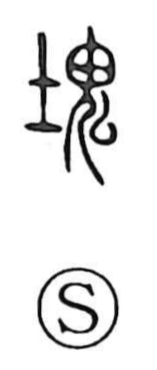

塊

Uncategorized
Kun: katamari | On: kai
lump ・ clod ・ mass
Explanation
A phono-semantic character: the left side is 土, grounding the meaning in earth or clay, while the right side uses 鬼 as a phonetic, just as in 嵬 (steep, high), where 鬼 carries the sound and also suggests something large, with a big head. In older shapes the right element appears as the kai of 嵬. Together they depict a sizeable clod of earth or clay, the image being of a heavy lump settled in a hollow or low-lying ground.